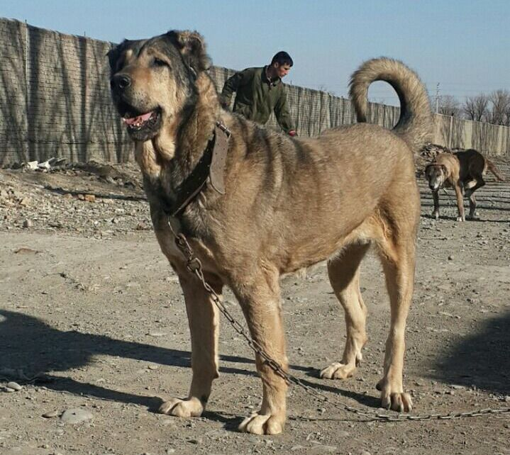

Šunų paroda
Bulldog
The Bulldog, also known as the English Bulldog or British Bulldog, is a medium-sized dog breed. It is a muscular, hefty dog with a wrinkled face and a distinctive pushed-in nose. The Kennel Club (UK), the American Kennel Club (US), and the United Kennel Club (US) oversee breeding records. Bulldogs are popular pets; they were the fifth most popular purebreed in the US in 2017 according to the American Kennel Club.Bulldogs have a longstanding association with British culture, as the BBC wrote: "to many the Bulldog is a national icon, symbolising pluck and determination."7 During World War II, Bulldogs were often likened to Prime Minister Winston Churchill and his defiance of Nazi Germany.8 The Bulldog Club (England) was formed in 1878, and the Bulldog Club of America was formed in 1890.Skaitykite daugiau
>
Pug
The pug is a breed of dog originally from China, with physically distinctive features of a wrinkly, short-muzzled face and curled tail. The breed has a fine, glossy coat that comes in a variety of colors, most often light brown (fawn) or black, and a compact, square body with well-developed muscles.Pugs were brought from China to Europe in the sixteenth century and were popularized in Western Europe by the House of Orange of the Netherlands, and the House of Stuart. In the United Kingdom, in the nineteenth century, Queen Victoria developed a passion for pugs which she passed on to other members of the Royal family.Pugs are known for being sociable and gentle companion dogs. The American Kennel Club describes the breed's personality as "even-tempered and charming". Pugs remain popular into the twenty-first century.Skaitykite daugiau

German shephard
The German Shepherd (German: Deutscher Schäferhund, German pronunciation: [ˈdɔʏtʃɐ ˈʃɛːfɐˌhʊnt]) is a breed of medium to large-sized working dog that originated in Germany. According to the FCI, the breed's English language name is German Shepherd Dog. The breed name was officially known as the "Alsatian Wolf Dog" in the UK from after the First World War until 1977 when its name was changed back to German Shepherd.2 Despite its wolf-like appearance, the German Shepherd is a relatively modern breed of dog, with its origin dating to 1899.As a herding dog, German Shepherds are working dogs developed originally for herding sheep. Since that time, however, because of their strength, intelligence, trainability, and obedience, German Shepherds around the world are often the preferred breed for many types of work, including disability assistance, search-and-rescue, police and military roles and acting.3[failed verification] The German Shepherd was the third-most registered breed by the American Kennel Club in 2020,4 and seventh-most registered breed by The Kennel Club in the United Kingdom in 2016.5Skaitykite daugiau

Sarabi dog
The Sarabi dog, also known as the Iranian shepherd dog, Azarbaijan mastiff, or Iranian mastiff, is a breed of livestock guardian dog from the East Azerbaijan Province in northern Iran, taking their name from the Sarab County. Sarab, East Azerbaijan also the name of a city in that county: both being in the East Azerbaijan Province of Iran. Sarabi dogs have been used for centuries by local shepherds to protect herds of sheep and goats from bears, wolves, jackals and other local predators. Persian mastiff is calm, controlled, independent, powerful and protective, the breed is also used to complete in staged dog fights. The breed is considered one of the oldest and most powerful indigenous dog breeds in Iran, the larger and heavier an individual dog is, the greater its value.Skaitykite daugiau

Siberian husky
The Siberian Husky is a medium-sized working sled dog breed. The breed belongs to the Spitz genetic family. It is recognizable by its thickly furred double coat, erect triangular ears, and distinctive markings, and is smaller than the similar-looking Alaskan Malamute.Siberian Huskies originated in Northeast Asia where they are bred by the Chukchi people of Siberia for sled pulling, and companionship. It is an active, energetic, resilient breed, whose ancestors lived in the extremely cold and harsh environment of the Siberian Arctic. William Goosak, a Russian fur trader, introduced them to Nome, Alaska, during the Nome Gold Rush, initially as sled dogs to work the mining fields and for expeditions through otherwise impassable terrain. Today, the Siberian Husky is typically kept as a house pet, though they are still frequently used as sled dogs by competitive and recreational mushers.Skaitykite daugiau

Poodle
The Poodle, called the Pudel in German and the Caniche in French, is a breed of water dog. The breed is divided into four varieties based on size, the Standard Poodle, Medium Poodle, Miniature Poodle and Toy Poodle, although the Medium Poodle variety is not universally recognised.The Poodle is most commonly claimed to have been developed in Germany, although it is also claimed to be from France, the Standard Poodle was originally used by wildfowl hunters to retrieve game from water. The smaller varieties of the breed were bred from the original in France where they were once commonly used as circus performers, but have become popular companion dogs.Skaitykite daugiau